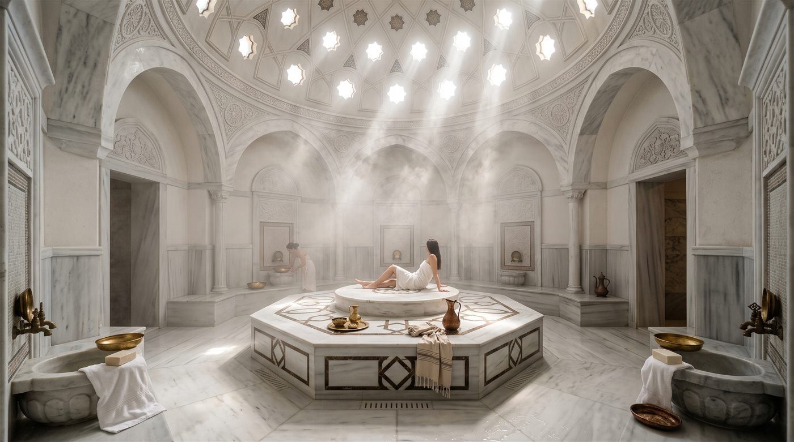
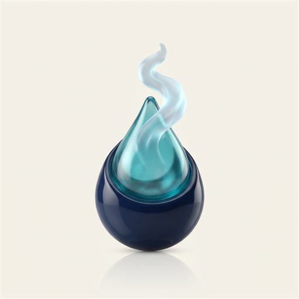
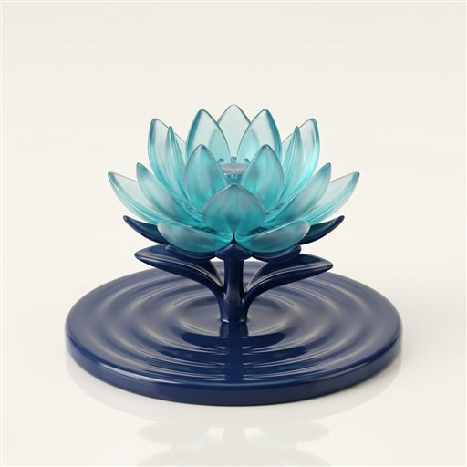
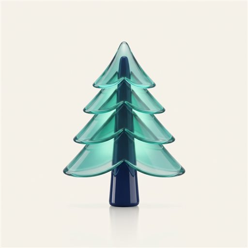

Mineral · 01
Kalsiyum
Kemik ve eklem sağlığının bilinen dostu. Kalsiyumca zengin termal suda yapılan banyolar, eklem ve kas bölgesindeki ağrı rahatlamasını destekler; günün yorgunluğunun atılmasına katkıda bulunur.

Her suyun bir kimliği vardır. Armutlu'nun termal kaynağı; nereden geldiğini, içinde ne taşıdığını ve size ne sunduğunu açıkça anlatır.

Bu su, yolculuğuna gökyüzünde başlar. Armutlu Yarımadası'nın ormanlarına düşen yağmur, kayaların arasından ağır ağır süzülür ve yerin derinliklerine iner.
Derinlerde, yerkabuğunun sıcaklığıyla ısınan su; geçtiği her kaya katmanından bir iz alır. Kalsiyumu kireçtaşından, magnezyumu ve sülfürü mineral damarlarından toplar. Binlerce yıl süren bu yavaş yolculuk, sıradan yağmur suyunu mineral zengini bir termal kaynağa dönüştürür.
Sonra bir gün, doğal çatlaklardan yüzeye yükselir — sıcak, duru ve dolu. Roma'dan Osmanlı'ya, Armutlu kaplıcalarının yüzyıllardır aranan bir durak olması tesadüf değildir. Tor Thermal, bu kadim kaynağı çağdaş bir yaşam alanının kalbine taşır.
Armutlu termal suyunun karakterini üç mineral belirler. Her biri, wellness ritüellerimizin doğal birer bileşenidir.
Kemik ve eklem sağlığının bilinen dostu. Kalsiyumca zengin termal suda yapılan banyolar, eklem ve kas bölgesindeki ağrı rahatlamasını destekler; günün yorgunluğunun atılmasına katkıda bulunur.
Gevşemenin minerali. Magnezyum içeren sıcak su, kasların yumuşamasını ve gerginliğin azalmasını destekler; zihinsel dinginliğe ve uyku öncesi rahatlamaya katkıda bulunur.
Termal kaynakların imza kokusu, cildin eski dostu. Sülfürlü su, cilt bakımına katkıda bulunur ve bedenin doğal detoks sürecini destekler.
Mineral içeriğine ilişkin ifadeler genel bilgilendirme amaçlıdır; tedavi vaadi değildir.
Kaplıca kültürünün yüzyıllardır bilinen dört alanı. Termal su tedavi etmez; iyi hissetme yolculuğunuza eşlik eder.
Sıcak mineralli su, eklem ve kaslardaki gerginliğin çözülmesini ve ağrı rahatlamasını destekler.

Termal suyun ısısı damarların genişlemesine yardımcı olur; kan dolaşımının canlanmasını destekler.

Sülfür ve mineraller cildin bakımına katkıda bulunur; termal çamur ritüeliyle bütünleşir.

Sıcak su banyosu ve terleme, bedenin doğal arınma sürecini destekler; zihni hafifletir.
Bu içerik genel bilgilendirme amaçlıdır; sağlık durumunuz için hekiminize danışınız. Sayfadaki görseller temsilîdir; yapay zekâ destekli konsept çalışmalarından oluşur.
Tor Thermal'de kaynak, yalnızca havuzlarda kalmaz. Termal su hattı yerleşkenin içinden geçer ve konut bloklarına ulaşır.
Kadın ve erkeklere ayrı termal havuzlardan aile kabinlerine, spa merkezinden dairelere uzanan bu hat sayesinde termal deneyim gündelik yaşamın bir parçası olur. Sabah ritüelinizi ortak havuzda, akşam dinlenmenizi kendi mekânınızın mahremiyetinde yaşarsınız.

Su analiz raporu ve mineral değerleri satış ofisimizde incelenebilir. Suyun kimliğini anlatmakla yetinmiyoruz; belgesini de gösteriyoruz. Deneyim Günü ziyaretinizde güncel analiz raporunu talep edebilir, değerleri satış ekibimizle birlikte inceleyebilirsiniz.
Önemli sağlık notu: Bu sayfadaki bilgiler termal su kültürüne ilişkin genel bilgilendirme amaçlıdır; hiçbir ifade tanı, tedavi veya iyileşme vaadi taşımaz. Termal su kullanımı kişisel sağlık durumunuza göre farklılık gösterebilir. Kalp-damar rahatsızlığı, tansiyon sorunu, gebelik veya kronik bir hastalığınız varsa termal havuz kullanımı öncesinde mutlaka hekiminize danışınız.
Yedi adımlık Tor Ritüeli'ni inceleyin ya da Deneyim Günü'nde gelin, termal suyu bizzat deneyin.